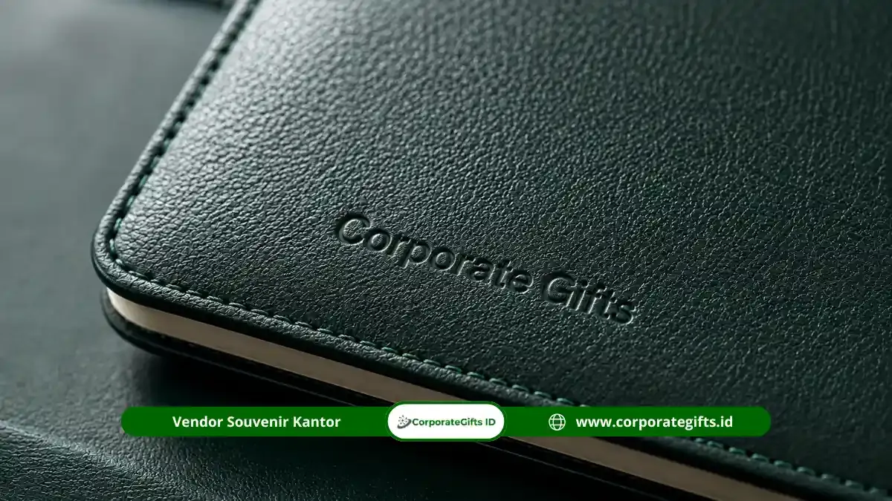

Corporate Gifts ID - Souvenir premium KPP (Kantor Pelayanan Pajak Pratama) adalah paket cenderamata eksklusif seperti gift set agenda kulit, tas laptop profesional, hingga payung lipat golf yang diberikan instansi kepada pegawai dan pejabat struktural. Pemberian ini menjadi bentuk apresiasi tulus atas capaian target penerimaan kerja maupun momentum istimewa seperti mutasi dinas, serah terima jabatan (sertijab), serta evaluasi tahunan.
Sebagai unit kerja Direktorat Jenderal Pajak (DJP) yang bersentuhan langsung melayani para wajib pajak, pemilihan produk berkualitas tinggi untuk apresiasi internal mencerminkan rasa penghargaan yang lebih mendalam dan personal dibandingkan merchandise massal biasa.
Poin Kunci Souvenir KPP Eksklusif:
- Momen Apresiasi Berbobot: Sangat tepat diberikan pada momentum pergantian tahun, kenaikan jenjang karier, sertijab pejabat, dan keberhasilan pencapaian target penerimaan.
- Kombinasi Fungsional & Prestise: Gift set agenda kulit PU dan pulpen logam memberikan kesan formal yang merepresentasikan wibawa instansi pemerintah.
- Dukungan Mobilitas Dinas: Tas laptop custom berlogo presisi menunjang aktivitas pegawai saat melakukan verifikasi lapangan maupun rapat koordinasi eksternal.
- Kustomisasi Logo Presisi: Logo KPP dapat disematkan dengan teknik emboss deboss elegan atau grafir laser presisi tinggi.
Mengapa Souvenir Eksklusif Cocok untuk Apresiasi Pegawai Pajak?
Souvenir kantor eksklusif memiliki pengaruh psikologis positif yang sangat kuat bagi para pegawai pajak. Tugas fiskal yang penuh ketelitian dan integritas tinggi membutuhkan apresiasi berkala agar motivasi kerja tim tetap terjaga.
Apresiasi internal berwujud cinderamata bermutu prima mempunyai nilai emosional yang jauh lebih berkesan dibandingkan produk promosi biasa. Selain itu, material yang tangguh menjadikannya berumur panjang, sehingga berfungsi sebagai memorabila kebanggaan yang dapat digunakan pegawai dalam aktivitas dinas sehari-hari.
Beberapa agenda resmi yang sangat ideal untuk penyerahan paket gift set eksklusif antara lain:
- Pencapaian target penerimaan pajak tahunan kantor wilayah/pratama.
- Momen pisah sambut, mutasi dinas, atau serah terima jabatan pimpinan cabang.
- Rapat kerja evaluasi kinerja akhir tahun (Refleksi Akhir Tahun).
- Pemberian penghargaan pegawai teladan (Employee of the Year).
- Peringatan Hari Pajak Nasional dan perayaan hari jadi unit instansi.
Koleksi Souvenir Premium yang Cocok untuk Instansi Pajak
Koleksi cenderamata yang paling representatif untuk lingkungan Kantor Pelayanan Pajak mencakup kombinasi produk fungsional kantor dan mobilitas eksekutif:
1. Gift Set Agenda Kulit dan Pulpen Premium
Paket cenderamata ini paling sesuai untuk pimpinan struktural, kepala seksi, maupun account representative (AR). Perpaduan cover buku agenda bermaterial kulit sintetis tahan air dengan pulpen rollerball beraksen logam menghadirkan aura profesionalisme formal. Logo instansi dapat diaplikasikan rapi menggunakan teknik deboss presisi pada cover buku.
2. Tas Ransel dan Tas Laptop Profesional
Pegawai KPP kerap melaksanakan kunjungan dinas luar, pemeriksaan lapangan, maupun audit kepatuhan. Tas laptop ransel dengan kompartemen busa tebal, jahitan kuat berstandar militer, dan bordir logo presisi akan sangat menunjang keamanan perangkat komputer jinjing mereka.

Pilihan tas dinas kerja dan aksesoris kantor custom memberikan kesan fungsional serta wibawa instansi yang kuat saat bertugas di lapangan.
3. Payung Lipat Golf Jumbo Anti UV
Payung golf lipat berangka serat karbon tahan terpaan angin menjadi perlengkapan praktis yang siap mengantisipasi berbagai kondisi cuaca ekstrem. Dimensi payung yang lapang memberikan kenyamanan optimal saat mobilitas dinas luar kantor.
Cara Mewujudkan Gift Set Eksklusif Internal KPP
Penyusunan paket gift set instansi pemerintah memerlukan perhatian khusus pada detail kustomisasi dan kesesuaian anggaran pengadaan. Berikut alur terstruktur yang disarankan bersama tim konsultan Corporate Gifts ID:
- Identifikasi Momen & Target Penerima: Tentukan apakah cenderamata ditujukan untuk jajaran pimpinan cabang, seluruh staf unit kerja, atau pegawai berprestasi tertentu.
- Penyesuaian Standar Anggaran: Sesuaikan pagu anggaran belanja barang instansi pemerintah dengan paket gift set yang paling efisien tanpa menurunkan standar kualitas fisik.
- Kurasi Item Cenderamata: Pilih kombinasi barang yang saling melengkapi, seperti buku agenda dengan flashdisk kartu berlogo atau tas laptop dengan tumbler vacuum flask.
- Pembuatan Mockup & Proofing Fisik: Pastikan logo resmi KPP diaplikasikan sesuai panduan identitas visual kementerian keuangan, baik dari ketepatan warna maupun proporsi ukuran.
- Perencanaan Timeline Produksi: Jadwalkan pemesanan minimal 2 hingga 3 minggu sebelum acara puncak agar proses kontrol mutu dan pengemasan hardbox berjalan sempurna.
Pertanyaan Seputar Souvenir Premium KPP (FAQ)
Kesimpulan dan Konsultasi Pengadaan
Souvenir premium KPP bukan sekadar bingkisan formal, melainkan instrumen apresiasi nyata yang menumbuhkan rasa bangga dan loyalitas pegawai. Memilih partner vendor profesional seperti CorporateGifts.ID memastikan setiap cenderamata instansi Anda diproduksi dengan standar mutu tertinggi.

Ditulis oleh: Arinda Zakia
Senior Corporate Gifting SpecialistSpesialis kurasi merchandise instansi pemerintah dan cenderamata korporat VIP di CorporateGifts.ID. Berpengalaman mendampingi ratusan satuan kerja kementerian, lembaga BUMN, dan kantor layanan publik dalam merancang gift set apresiasi pegawai yang elegan dan representatif.
Lihat Profil Lengkap & Panduan Lainnya